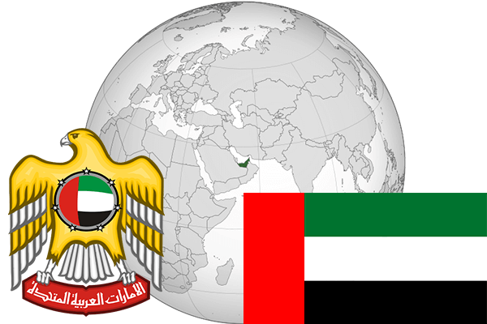

To`liq nomi: Birlashgan Arab Amirliklari
Region: Janubi G’arbiy Osiyo
Qonunchilik shakli: Absolyut monarxiya
Mustaqillik kuni: 2 dekabr 1971-yil
Poytaxt: Abu Dabi
Maydoni: 82,880 km²
Chegaradosh davlatlari: Saudiya Arabistoni, Ummon
Aholisi: 5 473 972 (2013-yil)
Aholi zichligi: 65 /км²
Aholining o`rtacha yoshi: 77,37 yil
Rasmiy tili: Arab tili
Dini: Islom
Pul birligi: BAA dirhami
Telefon prefiksi: +971
Internet domen: .ae
Xalqaro tashkilotlarga a`zoligi: BMT
Dengiz va okeanlarga chiqishi: Fors ko’rfazi
YIM: Butun: $ 400,9 mlrd. (2017-yil)
Yirik shaharlari: Abu Dabi, Dubay, Sharja